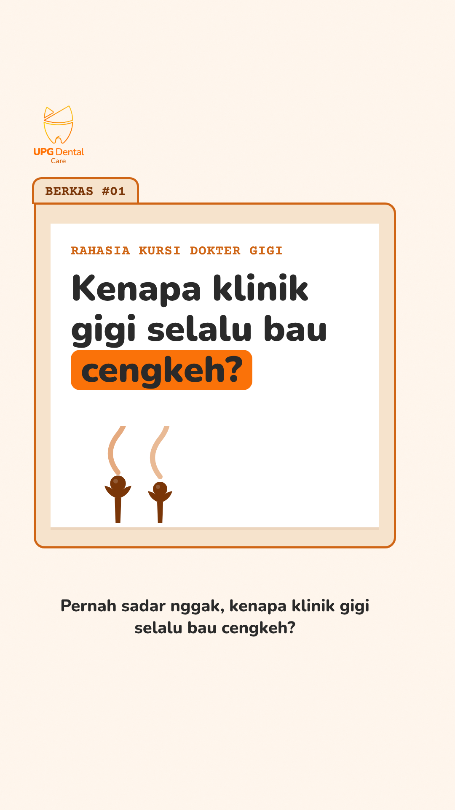
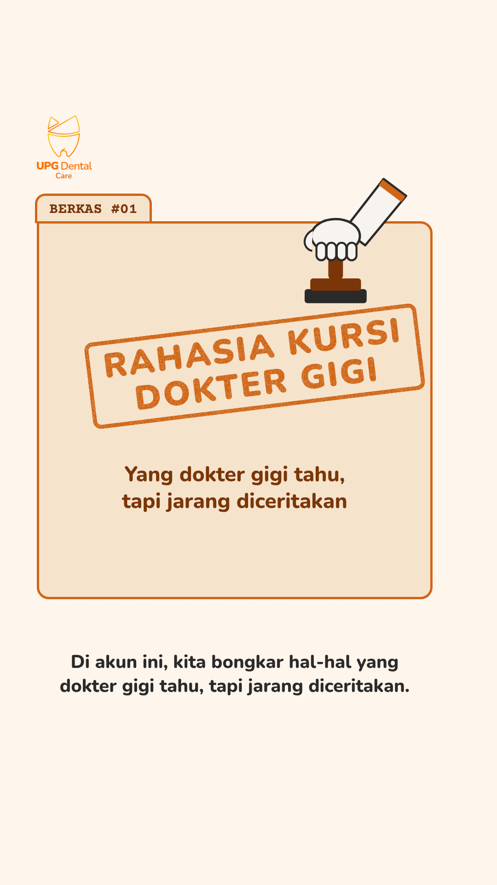
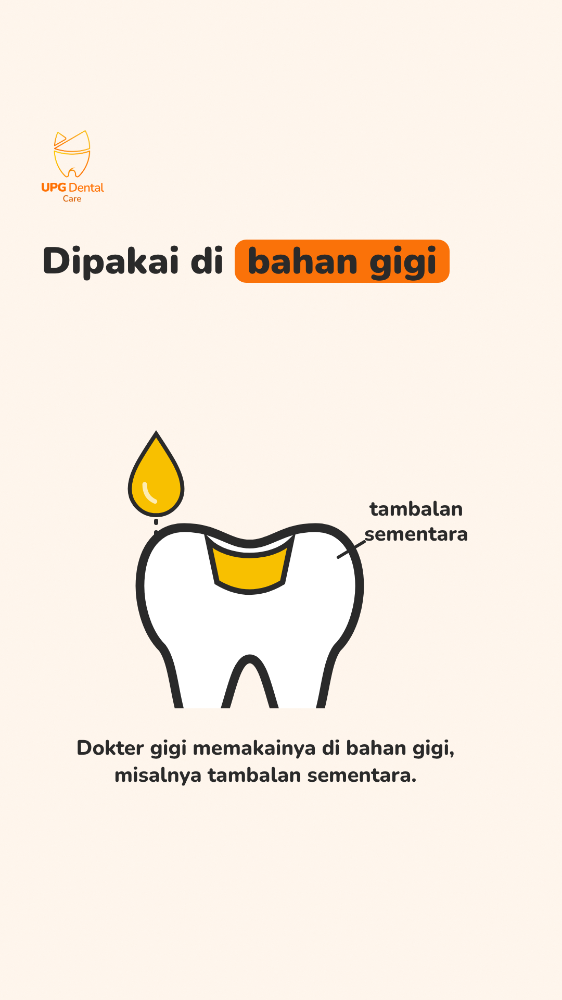
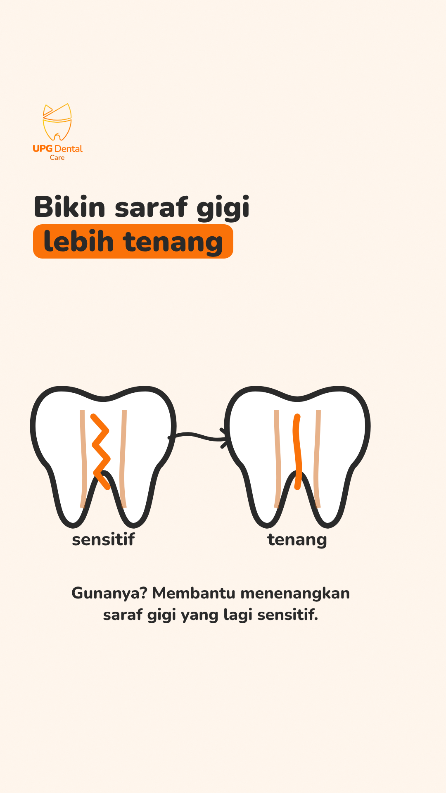
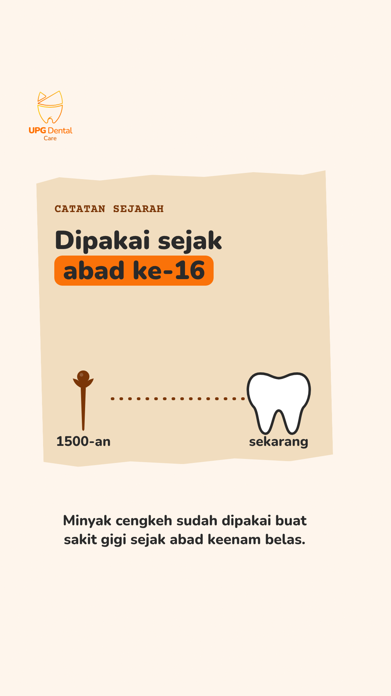
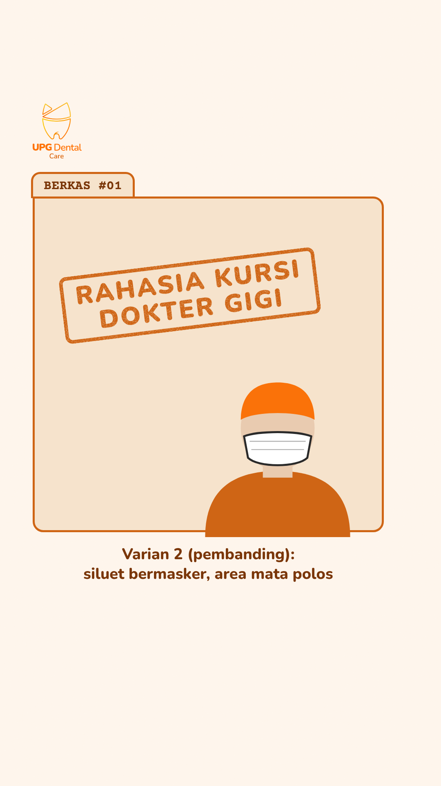

1 · 0–3 dtkHook. Teks diketik, asap cengkeh naik
2 · 3–8 dtkStempel jatuh (dug). Perkenalan akun 3 · 8–12 dtkMap terbuka: TEMUAN #1
3 · 8–12 dtkMap terbuka: TEMUAN #1 4 · 12–16 dtkCengkeh → minyak → eugenol
4 · 12–16 dtkCengkeh → minyak → eugenol
5 · 16–21 dtkTetes masuk ke tambalan sementara
6 · 21–25 dtkSaraf zig-zag jadi tenang
7 · 25–31 dtkKertas tua: sejak abad ke-16 8 · 31–35 dtkTeaser #02, cap LEBIH SERAM
8 · 31–35 dtkTeaser #02, cap LEBIH SERAM 9 · 35–41 dtkCTA: follow + komen, tangan menunjuk ke tombol komentar
9 · 35–41 dtkCTA: follow + komen, tangan menunjuk ke tombol komentar
Tokoh varian 2Pembanding. Rekomendasi: varian 1 (tangan, frame 2 & 9)